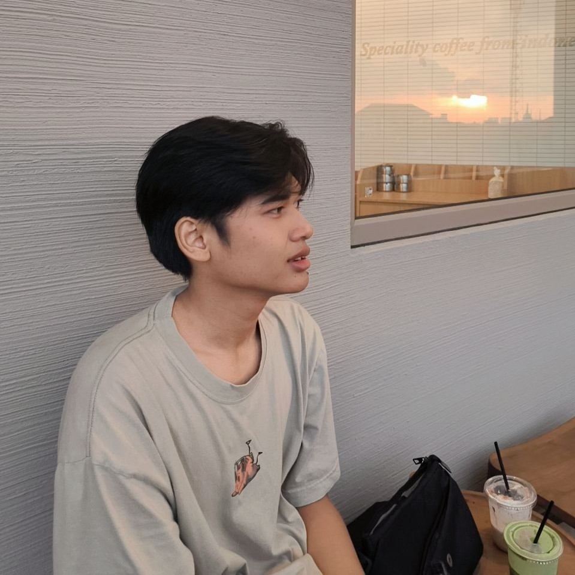
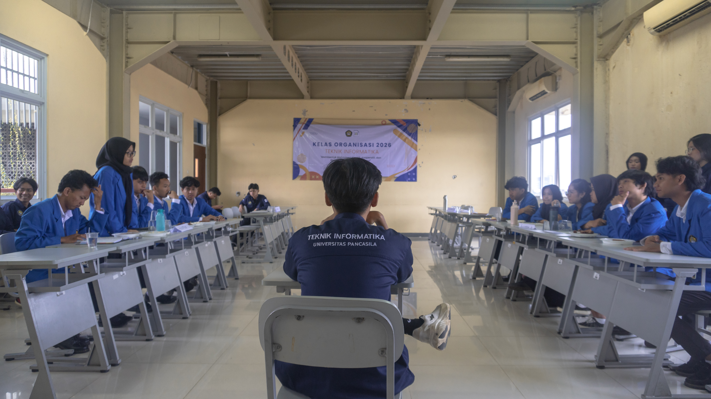
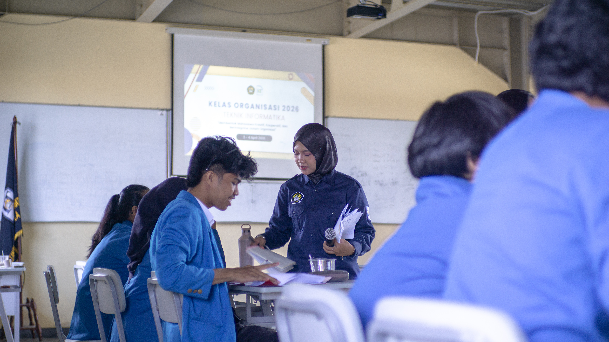
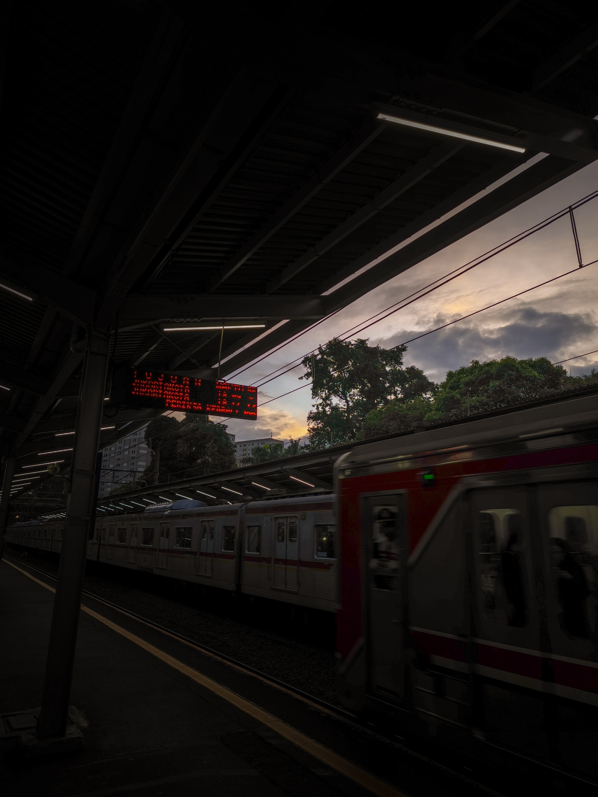
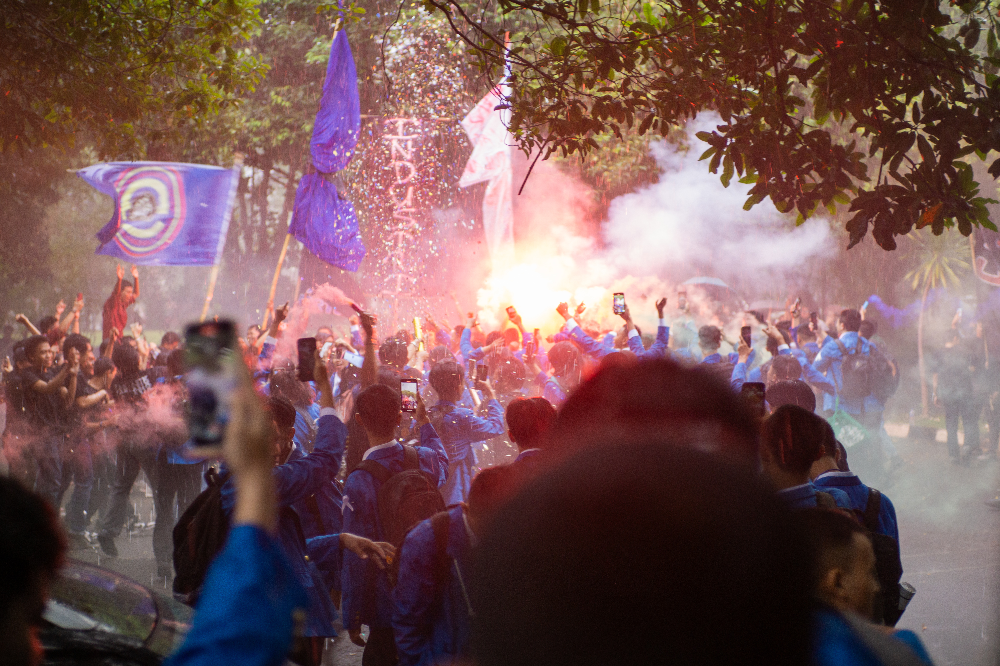
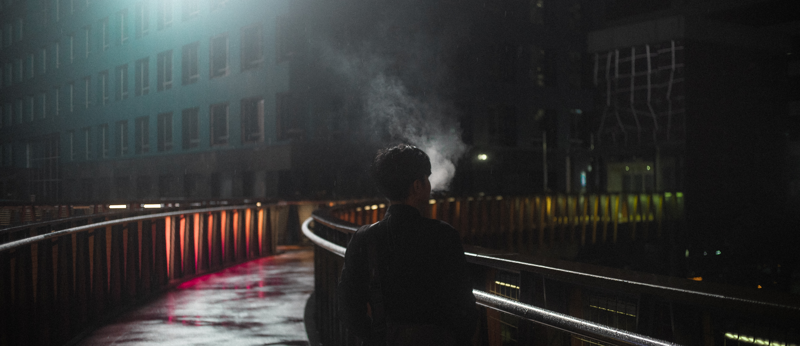
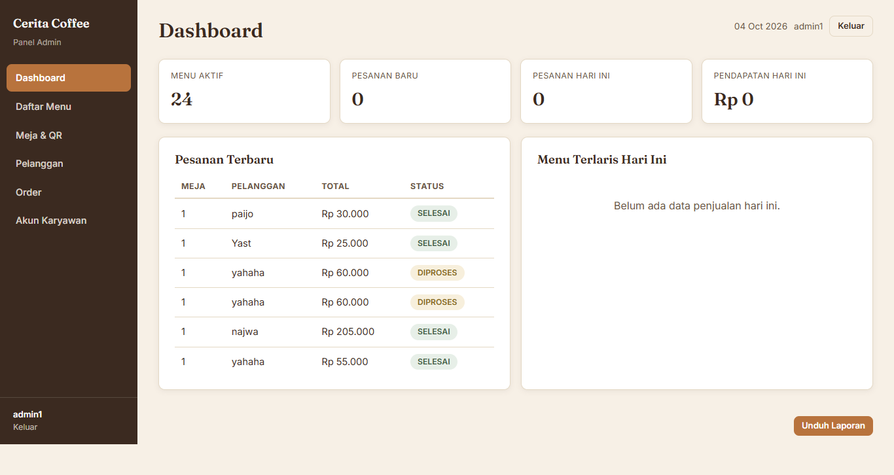
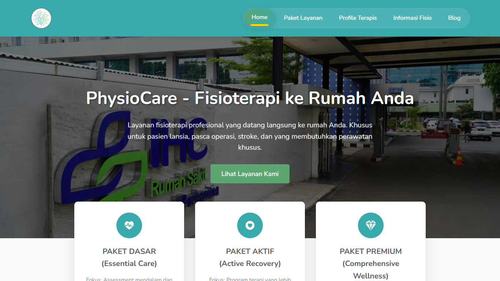
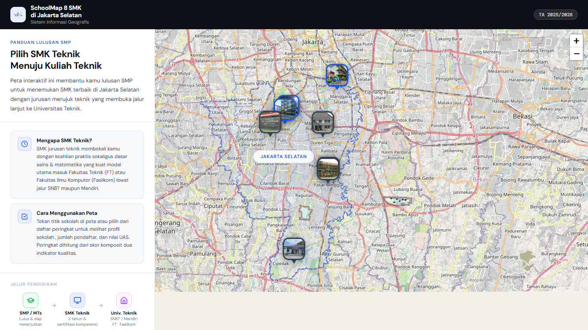
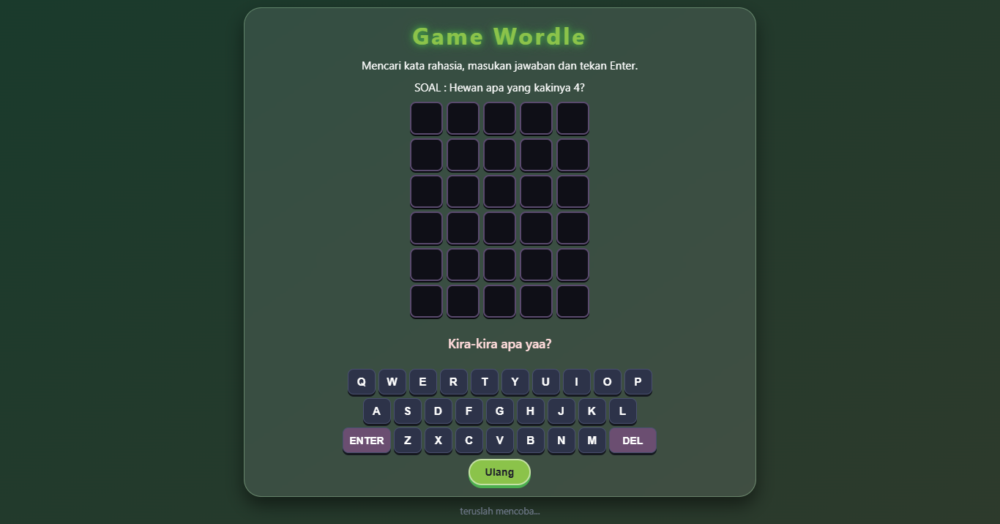

Web & Frontend
Membuat halaman web yang rapi dan responsif, dari struktur sampai interaksi.
- HTML
- CSS
- JavaScript
Halo saya
Saya suka Indomie Ayam Geprek
Mahasiswa Teknik Informatika yang suka main dan memotret. Di sini saya pamerkan hasil potret dan proyek yang sudah saya deploy.

Halo, saya Riast, mahasiswa Informatika di Universitas Pancasila. Saya suka membangun hal-hal yang bisa langsung dipakai, mulai dari website sederhana sampai sistem yang punya database dan beberapa peran pengguna.
Di kampus saya belajar rekayasa perangkat lunak, desain web, sistem informasi geografis, analisis dan desain berorientasi objek, serta etika profesi. Saya juga asisten praktikum Pemrograman Berorientasi Objek dan Desain Web.
Di luar kode, saya memotret. Keduanya saling melengkapi: ngoding melatih saya berpikir runtut, memotret melatih saya memperhatikan detail.
Hal-hal yang biasa saya kerjakan dan alat yang saya pakai.
Membuat halaman web yang rapi dan responsif, dari struktur sampai interaksi.
Merancang database lalu menghubungkannya ke aplikasi web.
Berpikir berorientasi objek dan merancang sistem sebelum menulis kode.
Memotret, menyunting foto, dan menyusun dokumen kegiatan yang rapi.
Sedang saya pelajari
Cerita singkat perjalanan saya sejauh ini.
Samarinda, Kalimantan Timur, adalah kota tempat saya tumbuh dan memulai semuanya.
Menempuh pendidikan menengah kejuruan sebelum melanjutkan ke perguruan tinggi.
Melanjutkan studi di jurusan Informatika: rekayasa perangkat lunak, desain web, sistem informasi geografis, analisis dan desain berorientasi objek, serta etika profesi.
Belajar menyesuaikan diri dengan ritme kota yang baru, lingkungan baru, dan kehidupan kampus.
Membantu mahasiswa belajar di praktikum Pemrograman Berorientasi Objek (Java) dan Desain Web (HTML, CSS, JS).
Kumpulan hasil potret saya. Klik foto untuk melihatnya lebih besar.






Proyek yang pernah saya bangun. Klik "Lihat Demo" untuk mencobanya langsung.

Sistem pemesanan kafe berbasis QR: pelanggan memindai kode di meja untuk melihat menu dan memesan, dengan data tersimpan di database MySQL.
Akun demo

Website profil perusahaan yang memperkenalkan bisnis dan layanannya dalam tampilan yang bersih dan mudah dibaca.

Proyek pemetaan sekolah menengah atas di Jakarta Selatan yang menampilkan sebaran lokasinya pada peta.

Pertama kali mencoba vibecoding.
Punya ide proyek, ingin berdiskusi soal pemrograman, atau sekadar menyapa? Hubungi saya lewat salah satu kanal di bawah.
Bisa diajak ngobrol soal: